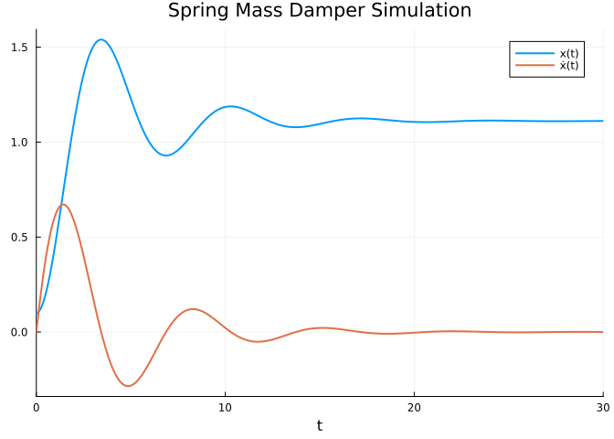

Code
using ModelingToolkit, DifferentialEquations, PlotsJoe(y) Carpinelli
July 4, 2021
This is a section from a control theory note-set I’m writing, Exploring Control Theory. It won’t be done for years! Over time, I’ll add chapters to the open-source repository, https://github.com/cadojo/controls. Some chapters that stand on their own will be added as blog posts here!
Our end goal as controls engineers is to affect a system in some desired way. To do this, we’ll need a mathematical description of our system. This mathematical description is known as a model. There’s a famous quote about mathematical models: “all models are wrong, but some are useful”.
This is really important. We are always approximating our system by describing it with a model. The question we need to ask is “is our approximate description of our system (our model) good enough?”
But what does this model look like? To answer this question, let’s first discuss system dynamics, and equations of motion.
If we want to affect a system, then by definition, the system should be affect-able (is that a word?) by external forces. These “forces” don’t necessarily need to be physical forces: consider the affect of introducing new predators in an ecosystem with the goal of affecting predator-prey populations.
So we have a mathematical description, and we know we’ll need some changing parameter to affect the mathematical description. Sounds like we need equations! The equations that govern our system are often called equations of motion. Any system that changes due to some external “force” is known as a dynamical system by definition.
The first step to any controls problem is identifying the dynamics; this usually means defining the equations of motion for our system. A set of equations of motion which describe our dynamical system is our model.
A really common system in engineering is known as the spring-mass-damper. We can roughly describe this system as a block on a table, which is connected to a spring. We can force (a.k.a. affect) this system by pulling on the block to extend or compress the spring.
Let’s figure out our equations of motion. The following question is usually a useful starting point: “what are the forces on our system?” We know we’ll have one external force: us pulling or pushing on the block! Let’s call this external force \(f_e\). We’ll also have a force due to the spring, and a force due to the friction between the block and the table. The force due to the spring will be proportional to the position of the block with respect to the spring’s neutral position: let’s call the spring constant \(k\). The force due to friction will be proportional to the velocity of the block (let’s forget about static friction for now): let’s call the coefficient of friction \(d\).
With all of the forces identified, we can start constructing the eqautions of motion for this system. If we call our block’s position \(x\), then the acceleration \(\ddot{x}\) will be equal to the sum of our external force \(f_e\), the spring force \(k x\), and the force due to friction \(d \dot{x}\). Summing these forces produces the following (common) spring-mass-damper equation, where \(m\) is the mass of the block.
\[ f_e = m \ddot{x} + d \dot{x} + k x \tag{1}\]
We have our model! This is a second-order differential equation (Equation 1). It helps to divide all variables into two groups: parameters, and states. States describe the system at some point in time. In this case, state variables answer the following questions: “where is the block, what is the velocity of the block, and what is the acceleration of the block?” One set of valid state variables for this system is \(x\) and \(\dot{x}\); we don’t need to include \(\ddot{x}\) in our list of state variables because we can calculate \(\ddot{x}\) from \(x\) and \(\dot{x}\).
We say “one set of state variables” because there may (and nearly always are) other valid state representations that could completely describe this system! State variables are not unique.
If we leave states as symbolic, and then look to the equation(s) of motion of a system, the parameters describe a specific instance of a system. Put another way, no matter what values \(f_e\), \(d\), and \(k\) take, this equation of motion is identifiable as a spring-mass-damper. For this reason, we can specify \(f_e\), \(d\), and \(k\) as parameters. We can assume a unit mass for the block for now.
The parameter \(f_e\) is our control parameter in this example, because we can change \(f_e\) to affect our system. For now, let’s not differentiate between control parameters and non-control parameters.
We can simulate these dynamics with Julia’s DifferentialEquations package. If you’re familiar with MATLAB, DifferentialEquations provides numerical integration solvers that are similar to MATLAB’s ode45 (and similar) solvers. We can use the ModelingToolkit package to conveniently put our model to code, and interface with DifferentialEquations for simulation.
Now that we have access to ModelingToolkit, let’s build the model!
\[ \begin{align} \frac{\mathrm{d} x\left( t \right)}{\mathrm{d}t} =& \textnormal{\.{x}}\left( t \right) \\ \frac{\mathrm{d} \textnormal{\.{x}}\left( t \right)}{\mathrm{d}t} =& f_e - d \textnormal{\.{x}}\left( t \right) - k x\left( t \right) \end{align} \]
With model defined above, we can use DifferentialEquations to simulate our system. Of course, to do this we’ll need to specify numerical values for our parameters, and initial conditions (the simulation starting point) for our state variables. The code below specifies some arbitrary initial conditions and constant parameter values, and simulates the resulting dynamics.
problem = let x₀ = 0.1, ẋ₀ = 0.0, dₙ = 0.5, kₙ = 0.9, fₙ = 1.0, Δt = 30.0
ODEProblem(
model,
[x => x₀, ẋ => ẋ₀],
(0.0, Δt),
[d => dₙ, k => kₙ, fₑ => fₙ]
)
end
solutions = solve(problem, Tsit5(); reltol = 1e-12, abstol = 1e-12)
plot(solutions; linewidth = 2, dpi = 130, title = "Spring Mass Damper Simulation")
This is personal writing; the words here do not reflect the views of any organization, employer, or entity, except for the author as an individual.
---
title: "Introduction to Dynamics"
description: "An introduction to dynamics through scientific software."
date: "2021-07-04"
file-modified: "2022-08-29"
author: "Joe(y) Carpinelli"
image: "/images/introduction-to-dynamics.png"
categories:
- Julia
- Dynamics
- Offprint
- Technical
aliases:
- "/blog/posts/introduction-to-dynamics.html"
format:
html: default
ipynb:
embed-resources: true
output-file: introduction-to-dynamics.ipynb
---
:::{.callout-note appearance="simple"}
## Offprint
This is a section from a control theory note-set I'm writing, **Exploring Control Theory**.
It won't be done for years! Over time, I'll add chapters to the open-source repository,
<https://github.com/cadojo/controls>. Some chapters that stand on their own will be
added as blog posts [here](/blog/)!
:::
## Overview
Our end goal as controls engineers is to _affect_ a system in some desired way.
To do this, we'll need a mathematical description of our system. This mathematical
description is known as a _model_.
There's a famous [quote](https://en.wikipedia.org/wiki/All_models_are_wrong)
about mathematical models: "all models are wrong, but some are useful".
This is really important. We are __always__ approximating our system by describing it with a model.
The question we need to ask is "is our approximate description of our system (our model) good enough?"
:::{.callout-tip}
## Definitions
- __Model__: a mathematical description of a system
:::
But what does this model _look like_? To answer this question, let's
first discuss system dynamics, and equations of motion.
## Dynamics
If we want to _affect_ a system, then by definition, the system _should_ be affect-able (is that a word?)
by external forces. These "forces" don't necessarily need to be physical forces: consider the affect
of introducing new predators in an ecosystem with the goal of affecting predator-prey populations.
So we have a mathematical description, and we know we'll need some changing _parameter_ to affect
the mathematical description. Sounds like we need equations! The equations that govern
our system are often called _equations of motion_. Any system that changes due to
some external "force" is known as a _dynamical_ system by definition.
The first step to any controls problem is identifying the _dynamics_; this usually
means defining the _equations of motion_ for our system. A set of _equations of motion_
which describe our _dynamical_ system __is__ our model.
## Example
A really common system in engineering is known as the __spring-mass-damper__.
We can roughly describe this system as a block on a table, which
is connected to a spring. We can _force_ (a.k.a. _affect_) this system by pulling on
the block to extend or compress the spring.
### Model Construction
Let's figure out our equations of motion. The following question is usually a useful
starting point: "what are the forces on our system?" We know we'll have one external
force: us pulling or pushing on the block! Let's call this external force $f_e$.
We'll also have a force due to the spring, and a force due to the friction
between the block and the table. The force due to the spring will be _proportional_
to the position of the block with respect to the spring's neutral position: let's
call the spring constant $k$. The force due to friction will be proportional
to the _velocity_ of the block (let's forget about static friction for now):
let's call the coefficient of friction $d$.
With all of the forces identified, we can start constructing the _eqautions of motion_
for this system. If we call our block's position $x$, then the acceleration $\ddot{x}$
will be equal to the sum of our external force $f_e$, the spring force $k x$, and the
force due to friction $d \dot{x}$. Summing these forces produces the following (common)
spring-mass-damper equation, where $m$ is the mass of the block.
$$
f_e = m \ddot{x} + d \dot{x} + k x
$$ {#eq-forced-mass-damper}
We have our model! This is a second-order differential equation (@eq-forced-mass-damper). It helps to divide
all variables into two groups: parameters, and states. States describe the system
at some point in time. In this case, state variables answer the following questions:
"where is the block, what is the velocity of the block, and what is the acceleration
of the block?" One set of valid state variables for this system is $x$ and $\dot{x}$;
we don't need to include $\ddot{x}$ in our list of state variables because we can
calculate $\ddot{x}$ from $x$ and $\dot{x}$.
:::{.callout-note}
We say "one set of state variables" because there may (and nearly always are) other valid state representations that could completely describe this system! State variables are __not__ unique.
:::
If we leave states as symbolic, and then look to the equation(s)
of motion of a system, the _parameters_ describe a specific _instance_ of a system.
Put another way, no matter what values $f_e$, $d$, and $k$ take, this equation of motion
is identifiable as a spring-mass-damper. For this reason, we can specify $f_e$, $d$, and $k$
as parameters. We can assume a unit mass for the block for now.
:::{.callout-note}
The parameter $f_e$ is our _control_ parameter in this example, because we can change $f_e$
to affect our system. For now, let's not differentiate between control parameters and
non-control parameters.
:::
### Coding our Model
We can simulate these dynamics with Julia's `DifferentialEquations` package. If you're
familiar with MATLAB, `DifferentialEquations` provides numerical integration solvers
that are similar to MATLAB's `ode45` (and similar) solvers. We can use the `ModelingToolkit`
package to conveniently put our model to code, and interface with `DifferentialEquations`
for simulation.
```{julia}
#| echo: false
#| output: false
using Logging
Logging.disable_logging(Logging.Info)
```
```{julia}
#| output: false
using ModelingToolkit, DifferentialEquations, Plots
```
Now that we have access to `ModelingToolkit`, let's build the model!
```{julia}
@parameters t fₑ d k
@variables x(t) ẋ(t)
δ = Differential(t)
eqs = [
δ(x) ~ ẋ,
δ(ẋ)~ - d*ẋ - k*x + fₑ
]
model = ODESystem(eqs, t, [x, ẋ], [fₑ, d, k]; name = :HarmonicOscillator)
```
### Simulating our Model
With `model` defined above, we can use `DifferentialEquations`
to simulate our system. Of course, to do this we'll need to specify
numerical values for our parameters, and initial conditions (the simulation
starting point) for our state variables. The code below specifies some arbitrary
initial conditions and constant parameter values, and simulates the resulting dynamics.
```{julia}
problem = let x₀ = 0.1, ẋ₀ = 0.0, dₙ = 0.5, kₙ = 0.9, fₙ = 1.0, Δt = 30.0
ODEProblem(
model,
[x => x₀, ẋ => ẋ₀],
(0.0, Δt),
[d => dₙ, k => kₙ, fₑ => fₙ]
)
end
solutions = solve(problem, Tsit5(); reltol = 1e-12, abstol = 1e-12)
plot(solutions; linewidth = 2, dpi = 130, title = "Spring Mass Damper Simulation")
```